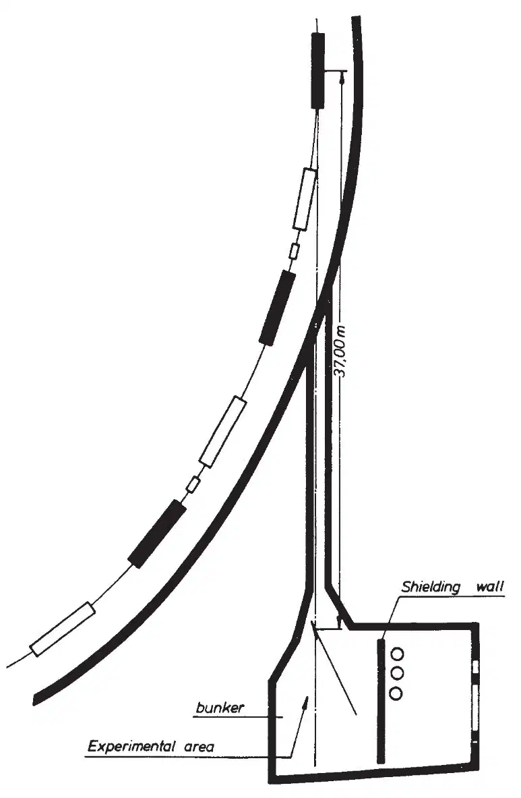
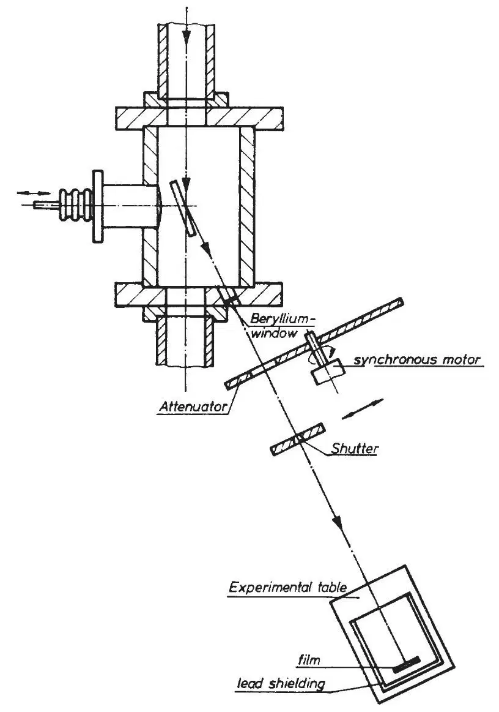
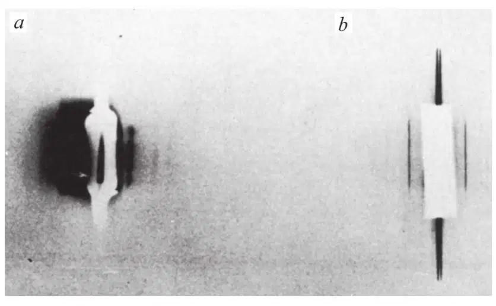
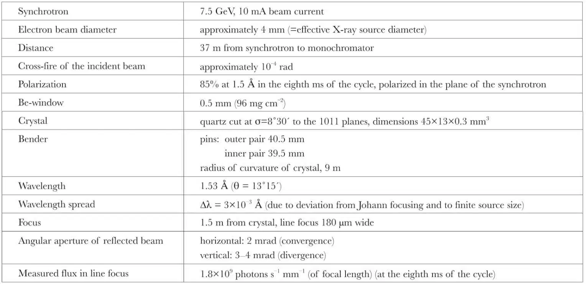
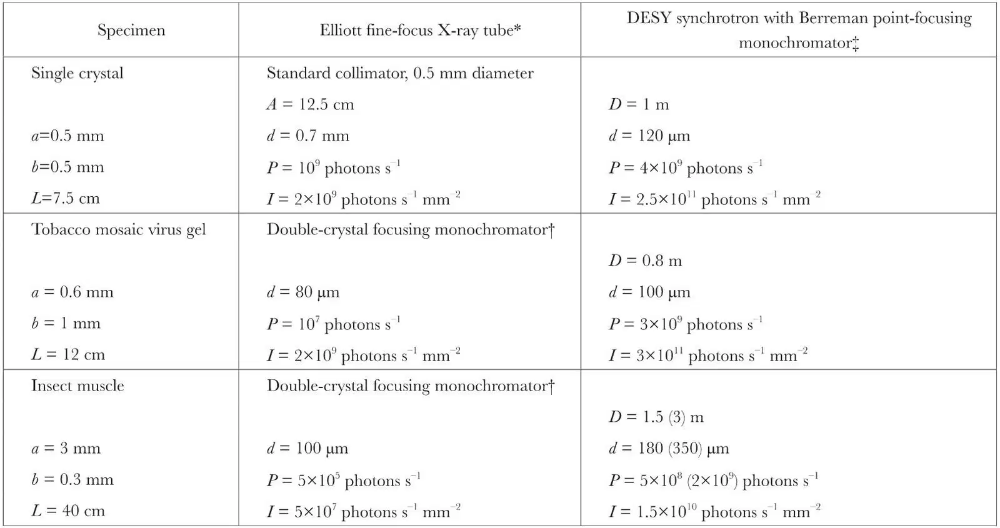

中文
中文G. Rosenbaum et al.
Editor’s Note
The new DESY synchrotron accelerator in Hamburg, Germany, had recently become operational. Here biologist Gerd Rosenbaum of the Max Planck Institute for Medical Research and his colleagues demonstrate the potential usefulness of this accelerator as an intense source of X-rays for imaging in biology. Relativistic electrons travelling around on DESY’s circular path naturally emitted X-rays in beams roughly 100 times brighter than any produced by then standard X-ray sources. The researchers show that this source could be used to produce images of biological specimens that are far clearer than those using the best conventional sources. Synchrotron X-ray sources have now become indispensable for imaging in biology. 中文
WHEN an electron is accelerated it emits radiation. At the very high energies used in DESY, the emitted radiation is confined to a narrow cone about the instantaneous direction of motion of the electron. Thus the synchrotron radiates tangentially. Synchrotron radiation is polychromatic, with a peak in the X-ray region for an electron energy of 7.5 GeV (see ref. 1 for the original theoretical description and refs. 2–4 for experimental details). 中文
The DESY synchrotron uses bursts of 50 pulses/s and each 10 ms pulse contains 6×1010 electrons (10 mA average beam current). The injection energy is relatively low and the electrons are accelerated up to 7.5 GeV in the 10 ms. 中文
Most of the X-radiation is emitted during the last 3 ms of each pulse: little radiation is produced at the lower electron energies, and so the time averaged intensity at 1.5 Å is about 20% of the peak value. 中文
We have evaluated the spectral luminance (that is, the power in photons per second radiated per unit area, solid angle, and wavelength interval) of both the synchrotron and a fine-focus rotating anode X-ray tube (see Table 2). The values are 2×1022 (time averaged) and 3×1020 photons s–1 sterad–1 cm–2 Å–1 respectively at 1.54 Å, showing clearly that the synchrotron is, relative to present X-ray tubes, a very bright source. The actual advantage to be gained in a diffraction experiment depends critically on the optical system necessary to focus and monochromate the radiation. Three types of focusing monochromators used in normal X-ray diffraction can be used: bent glass mirrors, quartz monochromators and graphite monochromators. 中文
A preliminary investigation of the properties of bent quartz monochromators5 used with synchrotron radiation is reported here. We have chosen quartz because of its suitable elastic and optical properties which allow it to be used asymmetrically cut and bent to form an accurate focusing monochromator, with a comparatively large numerical aperture. It also behaves substantially as a perfect crystal with a reflectivity near unity in a narrow angular range. We predict that it should be possible to focus the synchrotron radiation down to a point (200×200 μm2) with a Berreman6 monochromator to give a total flux of 1010 photons s–1 at 1.5 Å, which is higher than the flux available from other known X-ray sources (Table 2); also the beam is well collimated. The flux density, the important parameter when using film, is comparatively even higher because of the small focus. 中文
Because of its large mosaic spread (300 times greater than that of quartz) a graphite monochromator might seem advantageous for our application. When used with the white radiation from the synchrotron, however, the mosaic spread of graphite would produce a highly divergent reflected beam with considerable wavelength inhomogeneity, thus restricting us to small monochromator-film distances for reasonable spot diameters on the film. For these short distances it would not then be possible to collect radiation from a large area of graphite by focusing. Alternatively, for larger film distances the reflected beam would require collimation, which would again reduce the expected intensity. We do not, therefore, expect graphite to give more intensity than quartz. Furthermore, the optical and mechanical properties of graphite are much less convenient. 中文
Experimental Details
All experiments took place in the F41 (synchrotron radiation) group bunker at DESY in Hamburg (Fig. 1 and 2). The experimental area can only be entered when the main beam shutter between the synchrotron and the bunker is closed so that all the experiments had to be done by remote control. The quartz crystal was mounted in the vacuum pipe leading to the synchrotron ring. The reflected beam came out through a beryllium window(0.5 mm thick) of diameter 1.5 cm. A rotating disk containing a slot was used as an attenuator. This and a lead shutter were mounted near the window. The rotating disk was arranged to run synchronously with the synchrotron. A film holder was mounted about120 cm from the quartz crystal on a table movable by remote control. Intensities were recorded on Ilford Industrial G film. The monochromator (Steeg and Reuter) consisted of a slab of quartz (45×13×0.3 mm3) with the face containing the long axis cut at about8° to the 1011 planes. The slab was bent by two sets of pins. Before mounting the crystal in the beam, the curvature was pre-adjusted to the required radius with laser light. The final position of the focus was determined by through-focal photographs. The best focal line had a width of 180 μm and represented the image of the radiating electron beam in the synchrotron. (The total effective source size, including the betatron and synchrotron oscillations, was about 4 mm.) Photographs were also taken close to the monochromator, where the reflected beam was wide, to evaluate the total reflected flux. Experiments with aluminium filters were made to estimate the strength of the higher harmonics in the quartz reflected radiation. 中文

Fig. 1. The F41 bunker at DESY and its position with respect to the synchrotron. 中文

Fig. 2. Monochromator housing and the experimental set-up. 中文
With a source-to-monochromator distance of about 40 m the crystal, if set exactly for one wavelength (for example, in the Johann arrangement5), would give a focus at 10 m. The white radiation fortunately allowed us to relax this condition and obtain a more practical focal length (1.5 m) at the expense only of very little wavelength inhomogeneity (Table 1). Furthermore, the angular adjustment of the quartz monochromator was not critical. The central wavelength of the reflected beam was determined by measuring the angle between incident and reflected beam. The position and size of the Be-window limited our observations to Bragg angles of 13±1°(that is, 1.5±0.15 Å). 中文
Finally, a simple camera was constructed (specimen-film distance 40 cm), and a photograph (Fig. 3a) was taken of the equatorial reflexions from a 2 mm strip of the longitudinal flight muscle from the giant water bug Lethocerus maximus7. The entrance aperture of the camera was approximately 2 mm × 2 mm. A helium-filled tube minimized air absorption in the space between the radiation-pipe window and the camera. The exposure was 15 min with the synchrotron running at 5 GeV. On one side of the direct beam a large area of parasitic scattering is visible apparently resulting from the quartz and from the steel pins used to bend the quartz. Fortunately, the camera entrance-slits were not symmetrically positioned, so that a clear view of one side of the diffraction pattern was obtained. The substantially greater width of the “20” line on the photograph made with synchrotron radiation, compared with that made using a conventional X-ray source (Fig. 3b, Elliott fine-focus rotating anode tube and bent quartz monochromator) has not been explained. The comparative intensity of the two photos shows that the synchrotron (at 5 GeV) is about ten times more effective than one of the most intense X-ray sources currently available. 中文

Fig. 3. Equatorial reflexions from dorsolongitudinal flight muscle of Lethocerus maximus recorded with: a, monochromated synchrotron radiation; electron energy 5 GeV, beam current 8 mA, exposure time 15 min, specimen film distance 40 cm; note the parasitic scattering on the left of the backstop arising from fluorescence from the monochromator holder; b, Elliott fine-focus rotating anode tube at 40 kV, 15 mA, exposure time 1 h, specimen film distance 36 cm. The strong line is the 20 reflexion (d=231 Å); the weak lines are the 21, 31 and 32 reflexions. 中文
Calculated and Observed Intensities
Using the theory of Schwinger1 and a programme written by Klucker, DESY group F41, we have calculated the intensities at 1.5 Å wavelength and at the harmonics of 1.5 Å:when the synchrotron runs at 7.5 GeV the second and third harmonics are twice as intense (photons/s) as the 1.5 Å radiation. 中文
We have measured photographically the instantaneous intensity of the reflected beam passing the disk attenuator at the eighth ms of each synchrotron acceleration cycle. The contribution of higher orders has been estimated from measurements made through aluminium filters of various known thicknesses, and we have adopted values for the absorption coefficients8. The sensitivity of Ilford Industrial G film at 1.5 Å has been extrapolated from the calibrated value at 1.54 Å (ref. 9). The experimental conditions and data are summarized in Table 1. 中文
Table 1. Data for Quartz Monochromator in Synchrotron Radiation Beam

The ratio of the intensity at 1.5 Å, evaluated as indicated above, to the calculated incident intensity per unit wavelength interval is an “integrated band pass” which was found to be
∫R(λ)dλ = 0.7 × 10–4 Å
Transforming the wavelength into an angle using Bragg’s law we find an integrated reflectivity
∫R(θ)dθ = Rint = 1.0 × 10–5 rad
for a quartz crystal cut at 8°30´ to the 1011 plane. 中文
Quartz behaves essentially as a perfect dynamical diffractor10. Renninger11 has calculated the reflectivity of a perfect quartz crystal (without corrections for absorption) to be
Rint = 4.4×10–5 rad
and Brogren12 measured an integrated reflectivity of
Rint = 3.9×10–5 rad
for a polished quartz crystal cut parallel to the  planes. The case of an asymmetrically cut perfect crystal with absorption is treated in the Darwin–Prins theory. Using Zachariasen’s formulae13 we have calculated an integrated reflectivity of
planes. The case of an asymmetrically cut perfect crystal with absorption is treated in the Darwin–Prins theory. Using Zachariasen’s formulae13 we have calculated an integrated reflectivity of
Rint = 1.45×10–5 rad
for a quartz crystal cut at 8°30´ to the planes (λ = 1.5 Å) which agrees with our experimental value. 中文
We emphasize that the aim of our experiments was not to make quantitative measurements of the reflectivity of quartz but to show that quartz is a suitable material for the construction of a focusing monochromator for synchrotron radiation, and to check that there was no large disparity between the observed and calculated flux of monochromated synchrotron radiation. Our results show that the monochromator has properties which can be accurately predicted. We have emphasized neither the accurate determination of the attenuation ratio of the rotating disk nor the speed of the shutter. Moreover, the evaluation of the contribution from higher harmonics may be inaccurate. We estimate that the error in our result may amount to 50%. Furthermore, the state of the surface of the quartz crystal is difficult to control, although it has a considerable influence on the actual shape and height of the reflectivity curve14,15. 中文
Estimated Intensities for Various Configurations
We intend to set up a Berreman monochromator6 to give a point-focused beam from a quartz crystal ground so as to give the required curvature in one plane and bent to the corresponding curvature in the second. There seem to be no theoretical reasons why this should not produce foci of similar dimensions to those that we have obtained with a simple bent crystal, especially as the geometry of the synchrotron beam relaxes some of the stringent conditions which the radii of curvature of the crystal must otherwise satisfy. 中文
The estimated performance of such an arrangement for each of three typical configurations used in biological applications of X-ray diffraction is shown in Table 2, and the performance is compared with a “conventional” fine-focus rotating anode tube. The calculated intensities are based on the effective band pass give above, 0.7×10–4 Å. 中文
Table 2. Biological Applications

a, Width of specimen; b, height of specimen; L, specimen film distance; A, anode specimen distance; D, focal length, that is, monochromator film distance; d, spot or focus diameter on film; P, X-ray power reaching the specimen; and I, flux density at the focus.
* Loaded with 40 kV, 50 mA into a 0.2×2 mm2 electron focus at the anode in the first case, and 40 kV, 15 mA into a 0.14×0.7 mm2 focus in the other two cases. This set is the most powerful fine-focus X-ray tube currently available.
† The setting of this Johann-type5 monochromator is optimized for each type of specimen.
‡ Conditions of the synchrotron are as in Table 1, computed for 1.5 Å radiation. 中文
The tube values were calculated from measurements made with Ilford Industrial G film and a rotating disk attenuator on an Elliot fine-focus rotating anode tube used with single and double focusing quartz monochromators. 中文
Higher Intensities and Longer Wavelengths
Some possible methods of obtaining higher intensities and utilizing the continuous spectrum are as follows. (a) According to current plans, the DESY synchrotron current will be raised from 10 mA to 50 mA. Also the electrons will be kept at the maximum energy for 1 or 2 ms, giving overall a six-fold improvement. (b) Sakisaka14 suggests that both the height and width of the rocking curve of quartz can be increased appreciably by gentle grinding. A gain of 2 or 3 should be possible without affecting the size of the focus. (c) For special applications, where only pulses of X-rays can be used, the synchrotron is a very advantageous source if the experiment can be synchronized with the periodic maximum emission from the synchrotron. The integrated reflectivity of quartz increases approximately linearly with wavelength up to 3–4 Å (ref. 12). The intensity of the synchrotron radiation decreases, however, in the wavelength range 1.5–4.5 Å, approximately as the inverse of wavelength. The reflected intensity is thus roughly independent of wavelength. Previously, long wavelength experiments were avoided because of the low conversion efficiency of the anode materials involved. 中文
We thank the Direktorium of DESY for facilities; Dr. R. Haensel and group F41 for advice; Drs. U. W. Arndt and H. G. Mannherz (who prepared the muscle specimen) and Dr. J. Barrington Leigh for the use of his calculations for the Berreman monochromator. The equipment was constructed in the workshops of DESY and the Max-Planck-Institut, Heidelberg. G. R. and J. W. have EMBO short term fellow-ships. 中文
(230, 434-437; 1971)
G. Rosenbaum and K. C. Holmes: Max-Planck-Institut für Medizinische Forschung, Heidelberg.
J. Witz: Laboratoire des Virus des Plantes, Institut de Botanique de la Faculté des Sciences de Strasbourg, Strasbourg.
Received March 3, 1971.
References:
1. Schwinger, J., Phys. Rev., 12, 1912 (1949).
2. Godwin, R. P., Springer Tracts in Modern Phys. (edit. by Höhler, G.), 51, 1 (1969).
3. Haensel, R., and Kunz, C., Z. Angew. Phys., 23, 276 (1967).
4. Bathow, G., Freytag, E., and Haensel, R., J. Appl. Phys., 37, 3449 (1966).
5. Witz, J., Acta Cryst., A25, 30 (1969).
6. Berreman, D. W., Rev. Sci. Inst., 26, 1048 (1955).
7. Pringle, J. W. S., Prog. Biophys. Mol. Biol., 17, 3 (edit. by Huxley, H. E., and Butler, J. A. V.) (Pergamon, Oxford, 1967).
8. International Tables of Crystallography, 3.
9. Morimoto, H., and Uyeda, R., Acta Cryst., 16, 1107 (1963).
10. Bearden, J. A., Marzolf, J. G., and Thomsen, J. S., Acta Cryst., A24, 295 (1968).
11. Renninger, M., Z. Kristallograph., 107, 464 (1956).
12. Brogren, G., Arkiv. für Fysik., 22, 267 (1962).
13. Zachariasen, W. H., Theory of X-ray Diffraction in Crystals (Dover, New York, 1967).
14. Sakisaka, Y., Proc. Math. Phys. Soc. Japan, 12, 189 (1930).
15. Evans, R. C., Hirsch, P. B., and Kellar, J. N., Acta Cryst., 1, 124 (1948); Gay, P., Hirsch, P. B., and Kellar, J. N., Acta Cryst., 5, 7 (1952).